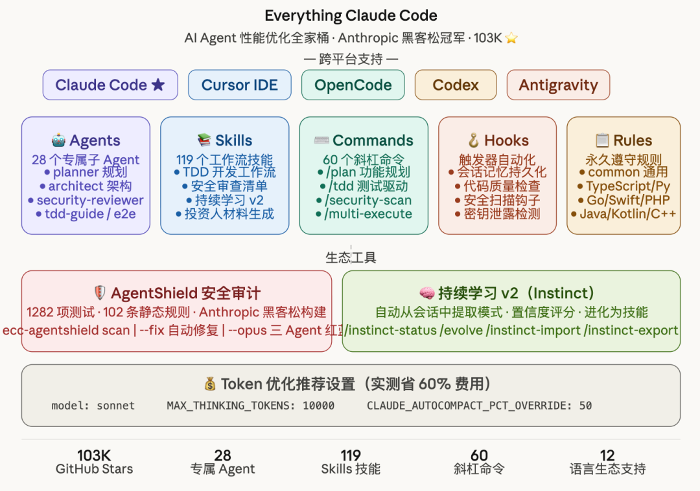

你有没有这种感觉：
用 Claude Code 写了一段时间，感觉它"很聪明"——但又总是在同样的地方犯同样的错误，总是忘掉你上次说的规范，总是从零开始而不是从上次的进度继续……
问题不在模型，在配置。而 Everything Claude Code，是目前见过的最完整的答案。
🏆 先看这个数字：103,000 Star
没有看错。
这是一个 GitHub 上获得 103,000 个 Star、被 13,400 次 Fork 的开源项目。它由 Anthropic x Forum Ventures 黑客松冠军 Affaan Mustafa 构建，在他用 Claude Code 开发多个真实生产应用的过程中，经过 10+ 个月密集打磨，最终沉淀为这套系统。
项目的副标题直接说清了它是什么：
The agent harness performance optimization system.
Skills, instincts, memory, security, and research-first development.
用人话说：这是一套让 Claude Code（以及 Cursor、Codex、OpenCode）变得更聪明、更稳定、更省钱的完整配置系统。不只是几个 prompt，而是一整套架构。

🧩 五大核心模块：理解它的全貌
Everything Claude Code（简称 ECC）的核心由五个模块组成，每个模块解决一类具体问题。
🤖 Agents — 28 个专属子 Agent
每个 Agent 都是一个有限范围的专家，负责特定类型的任务：
关键设计：每个 Agent 只拥有完成自己任务所需的最小工具集。code-reviewer 只有 Read、Grep、Glob、Bash，无法做它不该做的事。这是权限最小化原则在 AI Agent 上的具体实践。
📚 Skills — 119 个工作流技能
Skills 是可复用的工作流定义，覆盖从编码规范到业务场景的各种领域：
• 开发工程类：TDD 工作流、安全审查、E2E 测试、API 设计、Docker 模式、数据库迁移 • 语言框架类：Django、Laravel、Spring Boot、Go、Rust、Swift、Perl、Kotlin、C++ • 业务内容类：文章写作、内容引擎、市场调研、投资人材料、融资外联 • AI/ML 类：PyTorch 模式、LLM 成本优化、模型路由、正则 vs LLM 决策框架 • 平台特化：ClickHouse 数据工程、NotebookLM 处理、苹果设备端 LLM
⌨️ Commands — 60 个斜杠命令
所有命令即开即用，无需记语法：
/plan "Add user authentication" # 功能规划
/tdd # 测试驱动开发
/code-review # 代码审查
/build-fix # 修复构建错误
/security-scan # 安全扫描
/e2e # E2E 测试生成
/refactor-clean # 死代码清理
/multi-plan # 多 Agent 任务分解
/multi-execute # 多 Agent 协同执行
/instinct-status # 查看已学习的 Instinct
/evolve # 将 Instinct 聚类进化为 Skill🪝 Hooks — 触发器自动化
Hooks 在工具调用事件发生时自动触发，无需手动干预：
• 会话记忆持久化： SessionStart时自动加载上次会话状态，Stop时自动保存• 代码质量： PostToolUse后自动 TypeScript 类型检查、格式化• 安全防护：检测 console.log、发现sk-、ghp_、AKIA等密钥泄露模式• 上下文压缩：在合适的时机主动建议 /compact，避免上下文耗尽
📋 Rules — 永久遵守的编码规范
Rules 是每次对话都会加载的不可变守则，按语言分目录组织：
rules/
common/ # 通用原则（所有项目必装）
typescript/ # TS/JS 特有规范
python/ # Python 特有规范
golang/ # Go 特有规范
swift/ # Swift 特有规范
php/ # PHP 特有规范⚡ 快速上手：三步激活完整系统
第一步：安装插件（推荐方式）
在 Claude Code 会话中执行：
# 添加插件市场
/plugin marketplace add affaan-m/everything-claude-code
# 安装插件
/plugin install everything-claude-code@everything-claude-code完成后，你立刻拥有 28 个 Agent、119 个 Skill、60 个命令。
第二步：安装 Rules（必须手动）
⚠️ Claude Code 插件系统有限制：Rules 无法通过插件自动分发，必须手动复制。
# 克隆仓库
git clone https://github.com/affaan-m/everything-claude-code.git
cd everything-claude-code
# 安装依赖
npm install
# macOS/Linux：按你的技术栈选择语言
./install.sh typescript # 只装 TS/JS 规范
./install.sh typescript python # 装多个
# Windows PowerShell
.\install.ps1 typescript python golang
# 或用 npx（跨平台）
npx ecc-install typescript支持 --target 参数切换平台：
./install.sh --target cursor typescript # 安装到 Cursor
./install.sh --target antigravity python # 安装到 Antigravity第三步：验证安装
# 查看已安装的全部组件
/plugin list everything-claude-code@everything-claude-code
# 试用第一个命令
/everything-claude-code:plan "Add user authentication"🎬 真实工作流场景：三个经典组合
场景一：开发新功能（规范三连）
# 第一步：让 planner Agent 创建实现蓝图
/everything-claude-code:plan "Add OAuth login with GitHub"
# 第二步：tdd-guide 强制测试先行
/tdd
# 第三步：code-reviewer 检查代码质量
/code-review场景二：准备上生产（发布三连）
# 安全审计：OWASP Top 10 扫描
/security-scan
# E2E 测试：关键用户流程验证
/e2e
# 覆盖率验证：确保 80%+
/test-coverage场景三：修复线上 Bug（调试三连）
# 先写一个复现 Bug 的失败测试
/tdd
# 实现修复，让测试通过
# （Claude Code 执行实现）
# 审查是否引入新问题
/code-review🛡️ AgentShield：黑客松构建的安全扫描器
这是 ECC 生态里最独特的子工具，在 2026 年 2 月 Cerebral Valley x Anthropic 黑客松上构建。
核心数据：1282 项测试，98% 覆盖率，102 条静态分析规则。
# 快速扫描（无需安装）
npx ecc-agentshield scan
# 自动修复安全问题
npx ecc-agentshield scan --fix
# 深度分析：三个 Opus 4.6 Agent 红蓝对抗
npx ecc-agentshield scan --opus --stream
# 生成安全配置
npx ecc-agentshield init扫描什么：CLAUDE.md、settings.json、MCP 配置、Hooks、Agent 定义、Skills，覆盖五大类别：
1. 密钥检测（14 种模式： sk-、ghp_、AKIA等）2. 权限审计 3. Hook 注入分析 4. MCP 服务器风险画像 5. Agent 配置审查
最令人印象深刻的是 --opus 模式：用三个 Claude Opus 4.6 Agent 组成攻击者 / 防御者 / 审计者流水线，攻击者寻找利用链，防御者评估保护措施，审计者综合输出优先级风险报告。这是对抗性推理，不只是模式匹配。
在 Claude Code 里直接运行：/security-scan
🧠 持续学习 v2：让 Agent 越用越聪明
这是 ECC 最有远见的功能设计——Instinct（本能）系统。
核心思路：每次会话中，AI 会自动提取高效的工作模式，记录为带有置信度评分的"本能"，随时间积累后进化为可复用的 Skill。
# 查看已学习的 Instinct（附置信度）
/instinct-status
# 从会话中主动提取模式
/learn
# 提取、评估后再保存（更谨慎的版本）
/learn-eval
# 将相关 Instinct 聚类进化为 Skill
/evolve
# 导出你的 Instinct 分享给别人
/instinct-export
# 导入别人的 Instinct
/instinct-import <file>
# 删除过期的 Instinct（30天 TTL）
/prune这套系统意味着：你的 Claude Code 会随着你的使用习惯和项目特点持续进化，而不是每次都从同一个起点出发。
💰 Token 优化：省钱才是硬道理
ECC 在 Token 优化上有非常具体的建议，来自作者真实的生产环境使用经验：
推荐的 ~/.claude/settings.json 配置：
{
"model": "sonnet",
"env": {
"MAX_THINKING_TOKENS": "10000",
"CLAUDE_AUTOCOMPACT_PCT_OVERRIDE": "50",
"CLAUDE_CODE_SUBAGENT_MODEL": "haiku"
}
}三个参数的实际效果：
日常工作流建议：
• 用 /model sonnet作默认，只在复杂架构设计时切换到/model opus• 不相关任务之间用 /clear（免费、瞬间重置）• 在逻辑断点处用 /compact（研究完成后、里程碑完成后）• 用 /cost随时监控 Token 消耗
关于 MCP 的警告：每个 MCP 服务器的工具描述都会消耗 Token。如果你开了 15 个 MCP，200K 的上下文窗口可能缩水到 70K。建议：每个项目保持不超过 10 个 MCP 启用，80 个工具活跃。
🌐 跨平台支持：一套配置，四个工具都能用
ECC 是目前唯一一个同时为四个主流 AI 编程工具深度适配的系统：
Cursor 的 DRY 适配器设计值得一提：Cursor 的 Hook 事件比 Claude Code 更多（20 种 vs 8 种）。ECC 设计了一个 adapter.js 中间层，把 Cursor 的事件格式转换为 Claude Code 格式，让同一套 Hook 脚本不需要重复编写就能在两个平台上复用。
📦 仓库结构：一眼看清边界
everything-claude-code/
├── agents/ # 28 个子 Agent 定义
├── skills/ # 119 个工作流技能（含框架专项）
├── commands/ # 60 个斜杠命令
├── rules/ # 按语言分目录的永久规则
├── hooks/ # 触发器自动化配置
├── scripts/ # 跨平台 Node.js 脚本实现
├── mcp-configs/ # MCP 服务器配置（GitHub/Supabase/Vercel 等）
├── contexts/ # 动态上下文注入（dev/review/research 模式）
├── examples/ # 真实项目的 CLAUDE.md 示例
│ ├── saas-nextjs-CLAUDE.md # Next.js + Supabase + Stripe
│ ├── go-microservice-CLAUDE.md # gRPC + PostgreSQL
│ ├── django-api-CLAUDE.md # DRF + Celery
│ └── rust-api-CLAUDE.md # Axum + SQLx + PostgreSQL
├── .claude/ # Claude Code 专用配置
├── .cursor/ # Cursor IDE 专用配置
├── .opencode/ # OpenCode 专用配置
├── .codex/ # Codex 专用配置
└── tests/ # 997 项内部测试（全绿）🔧 三个你可能忽略的实用功能
1. 选择性安装（v1.9.0 新增）
不想全装？通过 Manifest 驱动的安装管道，精确指定你需要的组件：
./install.sh typescript # 只装 TS 规范
./install.sh typescript python golang # 多语言组合2. Hook 运行时控制
临时调整 Hook 严格程度，不用修改配置文件：
# 设置严格程度
export ECC_HOOK_PROFILE=minimal # 最小化
export ECC_HOOK_PROFILE=standard # 标准（默认）
export ECC_HOOK_PROFILE=strict # 严格
# 临时禁用特定 Hook
export ECC_DISABLED_HOOKS="pre:bash:tmux-reminder,post:edit:typecheck"3. Skill Creator：从你自己的 Git 历史生成 Skill
# 本地分析（内置命令）
/skill-create # 分析当前仓库
/skill-create --instincts # 同时生成 Instinct
# 也可以安装 GitHub App，支持 10K+ 提交的大仓库系统会从你的提交历史中提取代码模式，自动生成适合你项目风格的 SKILL.md 文件。
🚀 五分钟上手：最小化安装
如果你只想先快速体验核心功能，不需要全部安装：
# 1. 在 Claude Code 里添加插件市场并安装
/plugin marketplace add affaan-m/everything-claude-code
/plugin install everything-claude-code@everything-claude-code
# 2. 克隆仓库，安装基础规则
git clone https://github.com/affaan-m/everything-claude-code.git
cd everything-claude-code
npm install
./install.sh typescript # 按你的技术栈选语言
# 3. 开始使用
/everything-claude-code:plan "你的第一个功能描述"安装完成后，不妨先跑一次安全扫描：
npx ecc-agentshield scan看看你现有的 Claude Code 配置有没有安全隐患。
项目地址：https://github.com/affaan-m/everything-claude-code
官网：https://ecc.tools
写在最后
项目的 README 最后只有一行话：
Star this repo if it helps. Read both guides. Build something great.
103K 个 Star，是开发者社区用行动投票的结果。
在 AI 工具迭代如此之快的今天，大多数人在用"裸奔"的方式使用 Claude Code——没有规范、没有记忆、没有安全保障，每次对话都是从零开始。
Everything Claude Code 给了一个系统性的答案：让 Agent 记住你的偏好，让规则成为习惯，让安全成为默认，让每次会话都在上一次的基础上推进。
这不只是一堆配置文件的集合，而是一种更专业地使用 AI Agent 的方式。
感兴趣的朋友，可以来我的 openclaw养龙虾群，